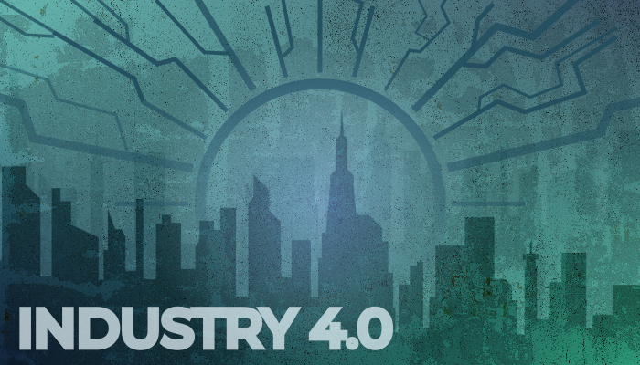

In recent years, you may have heard the term "Industry 4.0" thrown around in discussions about the future of technology, manufacturing, and the global economy. But what exactly is Industry 4.0, and where did this concept originate? In this blog, we'll explore the history and context of Industry 4.0 and its profound implications for the automation and digitization of various sectors.
A Brief History of Industry 4.0
The term "Industry 4.0" was first introduced in Germany as part of the "High-Tech Strategy for Germany" initiative in 2011. It represents the fourth phase in the evolution of industry, following earlier phases such as the first industrial revolution characterized by mechanization, the second industrial revolution marked by mass production and electricity, and the third industrial revolution driven by computerization and automation.
So, what makes Industry 4.0 different from its predecessors? Industry 4.0 is all about the fusion of the physical and digital worlds, where cutting-edge technologies like the Internet of Things (IoT), artificial intelligence (AI), big data, and automation converge to revolutionize industries across the board.
The Broad Aim: Automation of the Economy and Beyond
At its core, Industry 4.0 is associated with the broad aim of automating and digitizing various aspects of the economy, with a particular focus on manufacturing. However, its impact extends far beyond factories and assembly lines. Here are some key aspects of Industry 4.0 and its broader aims:
-
Integration of Digital Technologies: Industry 4.0 is characterized by the integration of digital technologies into industrial processes. This includes equipping machines and equipment with sensors and connecting them to the internet, allowing for real-time data collection and analysis.
-
Data-Driven Decision-Making: The vast amount of data generated by connected devices is harnessed using advanced analytics and machine learning. This data-driven approach enables businesses to make more informed decisions, optimize processes, and enhance efficiency.
-
Automation and Robotics: Automation is a central theme of Industry 4.0. Advanced robotics and automation systems are used to perform tasks with precision and speed, reducing the need for human intervention in repetitive processes.
-
AI and Machine Learning: Artificial intelligence and machine learning technologies are applied to make sense of data, predict outcomes, and enable autonomous decision-making and control in manufacturing and supply chain operations.
-
Sustainability: Industry 4.0 emphasizes sustainable practices, including energy efficiency, reduced waste, and environmentally friendly production methods. This aligns with the broader goal of creating more eco-friendly and responsible industries.
-
Supply Chain Transformation: The digitization of supply chains is a significant component of Industry 4.0. Real-time tracking, demand forecasting, and efficient logistics management are essential for modern businesses.
-
Global Competitiveness: Embracing Industry 4.0 is seen as a way for countries and industries to maintain competitiveness in a global economy. By adopting advanced technologies, businesses can enhance their products and services, reduce costs, and expand their markets.
In conclusion, Industry 4.0 represents a significant shift in how industries operate and interact with the world. While its roots are in manufacturing, its impact extends to various sectors, and its overarching aim is the automation and digitization of the economy and beyond. As technology continues to evolve, Industry 4.0 will play a pivotal role in shaping the future of our industries and the way we live and work. Stay tuned for more updates on this transformative journey!